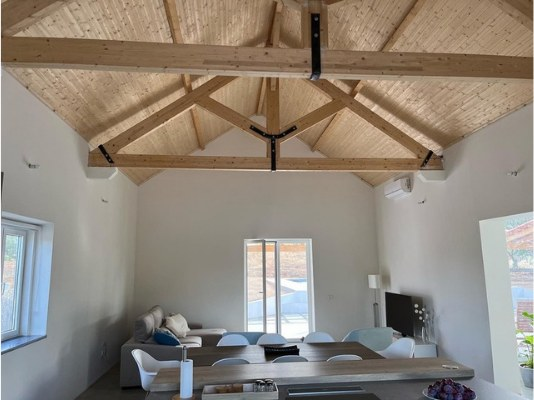

Fotografias
O que é.
Como se vive.
A casa, o interior e os espaços exteriores, em fotografias reais.
A história da casa
O que era.
O que é.
O antigo casão e um dos quartos. Dois espaços, antes e depois da transformação.
O casão


Um quarto da casa principal


A vossa próxima estadia